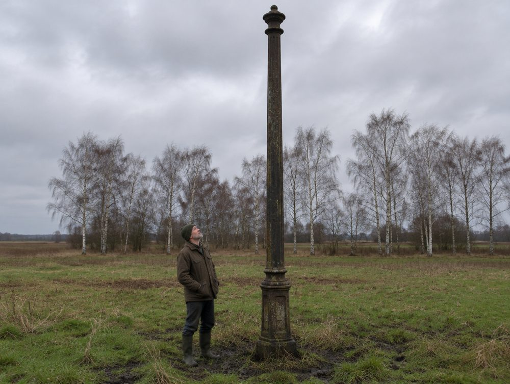

1 · United Kingdom
Britain under clouds
On most days, camera satellites see only clouds over England. NISAR sends its own microwave signal, so it sees the ground through cloud, smoke and darkness.
Drag the line to look under the clouds.

AI-generated illustrationThe Holme Fen posts
In the Fens, an iron post driven into the peat in the 1850s now stands far above the ground: the land around it has sunk as the peat dried out. Exact figure and source being verified.